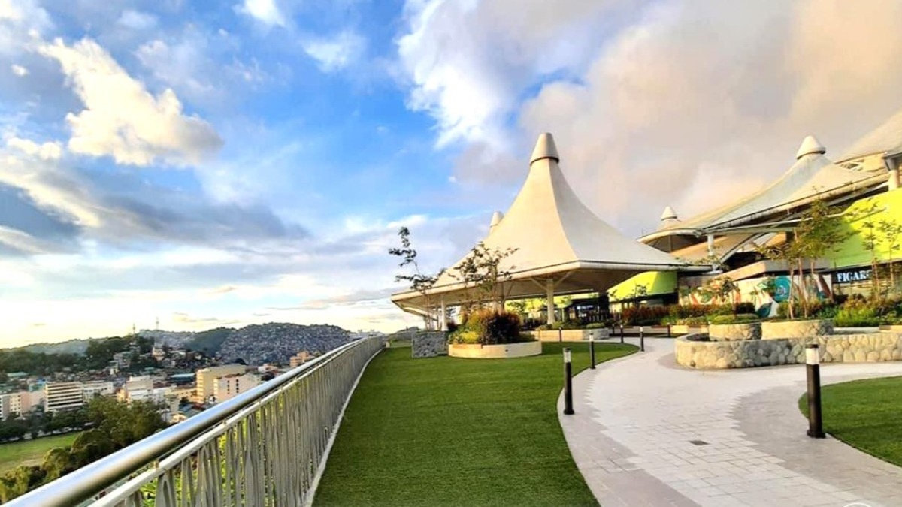
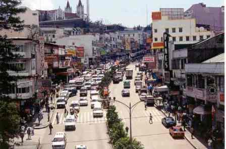
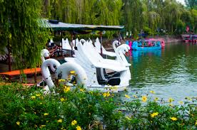
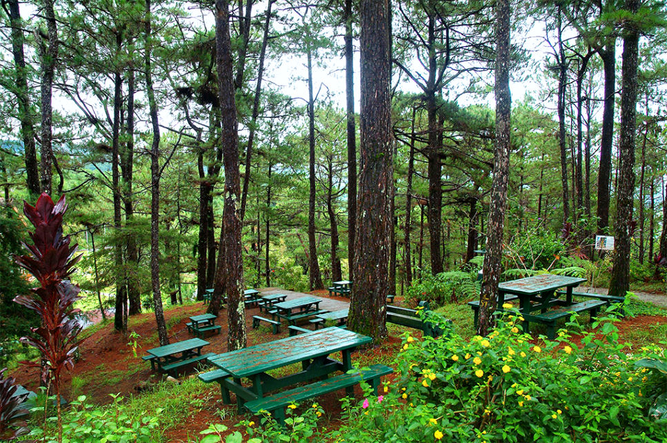

Home
Gallery
Location Map
About
Contact Us
Other places and Activities

SM SuperMall
You can go and visit the beautiful and unique SM of Baguio City.It is also the first SM Supermall which does not use an air-conditioning system upon its completion, other than the SM Mall of Asia, that make use of natural lighting and which does not have air conditioning in common areas.

Session Road
A lovely walk down from Luneta Hill toward the Baguio City Market, Session Road is where you will find department stores, bazaars, boutiques, old movie theaters, hotels, cafes and restaurants, bakeries and grocery stores. A majority of banks operating in the Baguio City are found there, as well as various offices, drugstores, book stores and news stands.

Burnham Park
Here you can ride bike's, carts and even boats. YOu can also enjoy walking around the burnham lake or enjoy the lovely view in the Rose Garden. Right beside the Cart area you will find the Skating ring where you can skate and ride various rides

Camp John Hay
Things To do: Treetop Adventure, Yellow Trail Hike, Butterfly Sanctuary, Bell House, Cemetery of Negativism, Food Trips and Picnic.